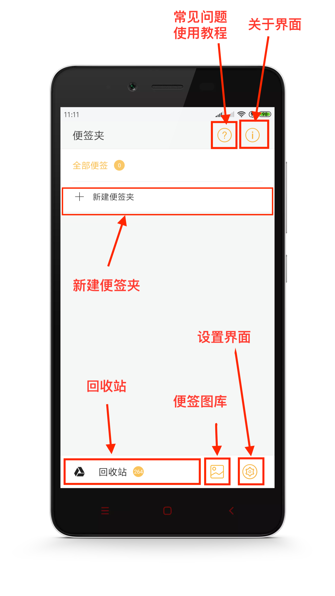
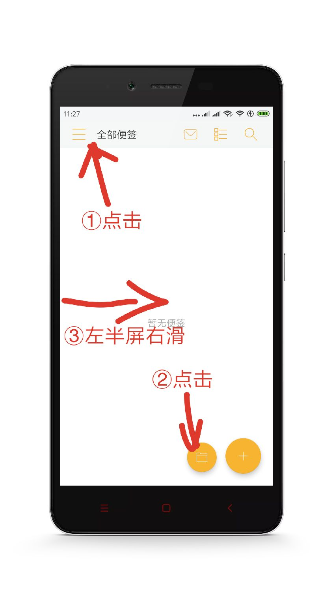

1. 前言
2. 首页功能
2.1 首页图解
2.2 显示模式
2.3 首页排序
2.4 单个置顶
2.5 单个加入回收站
2.6 设置提醒
2.7 批量置顶
2.8 批量加入回收站
2.9 批量导出txt
2.10 移动到便签夹
3. 新建便签
3.1 新建便签
4.便签夹
4.1 便签夹界面
4.2 新建便签夹
4.3 重命名便签夹
4.4 加密便签夹
4.5 便签夹排序
4.6 删除便签夹
5. 回收站
5.1 单个永久删除
5.2 单个还原到便签夹
5.3 批量永久删除
5.4 批量还原到便签夹
6. 桌面便签
6.1 桌面便签
6.2 如何添加
6.3 修改大小
6.4 修改样式
6.5 重新关联
6.6 如何移除
7. 设置
7.1 首页排序方式
8. 备份
8.1 本地备份
8.2 WebDAV云备份
8.3 数据还原
9. 其他
9.1 为什么有广告
9.2 如何移除广告
Published with GitBook
4.1 便签夹界面
便签夹界面
1. 什么是便签夹？
就是将便签进行分类。
2. 便签夹界面是什么样子的？
如下图：

3. 如何进入便签夹界面
以下三种方式都可以打开便签夹界面：
点击左上角的图标
点击右下角的便签夹图标
左半屏幕右滑

results matching "
"
No results matching "
"